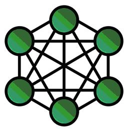
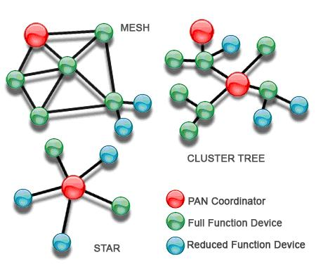

Chapter 9: ZigBee
9.1 ZigBee Introduction
Zigbee is a wireless technology developed as an open global standard to address the unique needs of low-cost, low-power wireless M2M networks. The Zigbee standard operates on the IEEE802.15.4 physical radio specification and operates in unlicensed bands including 2.4Ghz, 900Mhz, and 868Mhz.The Zigbee protocol has been created and ratified by member companies of the Zigbee Alliance. The Zigbee protocol was designed to provide an easy-to-use wireless data solution characterized by secure, reliable wireless network architectures.
Zigbee protocol features include:-
- Support for multiple network topologies such as point-to-point, point-to-multipoint, and mesh networks.
- Low duty cycle- provides long battery life
- Low lantency
- Direct sequence Spread spectrum (DSSS)
- Up to 65000 nodes per network
- 128-bit AES encryption for secure data connections
- Collision avoidance, retries, and acknowledgements

Mesh networks are decentralized in natural; each node is capable of self-discovery on the network. Also, as nodes leave the network, the mesh topology allows the nodes to reconfigure routing paths based on the new network structure. The characteristics of mesh topology and ad-hoc routing provide greater stability in changing conditions or failure at single nodes.

The Zigbee protocols build on recent algorithm research (Ad-hoc On-Demand Distance Vector, AODV) to automatically construct a low-speed ad-hoc network of nodes. In most large network instance, the network will be a cluster of clusters. It also forms a mesh or a single cluster.
ZigBee Application
Zigbee protocols are intended for use in embedded applications requiring low data rates and low power consumption. Zigbee current focus is to define a general-purpose, inexpensive, self-organizing mesh network that can be used for industrial control, embedded sensing, medical data collection, smoke and intruder warning, building automation, home automation, etc.
Typical application areas include:-
- Home Entertainment and control - Smart lighting, advanced temperature control, safety and security, movies and music.
- Home Awareness - Water sensors, power sensors, energy monitoring, smoke and fire detectors, smart appliance and access sensors.
- Mobile Service - m-payment, m-monitoring and control, m-security and access control, m-healthcare and tele-assist.
- Commercial Building - Energy monitoring, HVAC, lighting, access control.
- Industrial Plant - Process control, asset management, environment management, enery management, industrial device control, machine-to-machine (M2M) communication.
- Zigbee Coordinator - the coordinator forms the root of the network tree and might bridge to other networks. There is exactly one Zigbee coordinator in each network since it is the device that started the network originally. It is able to store information about the network, including acting as the Trust Centre & repository for security keys.
- Zigbee Router - router can act as an intermediate router, passing on data from other devices.
- Zigbee End-device - Contains just enough functionality to talk to the parent node (either the coordinator or a router); it cannot relay data from each other devices. This relationship allows the node to be asleep a significant amount of the time thereby giving long battery life. An end-device requires the least amount of memory, therefore can be less expensive to manufacture than a router or coordinator.